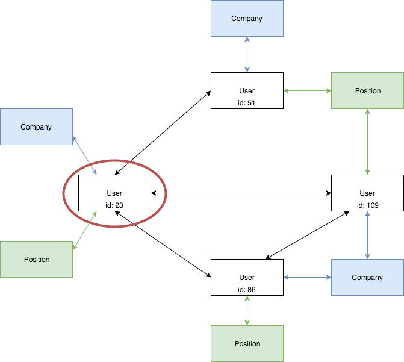
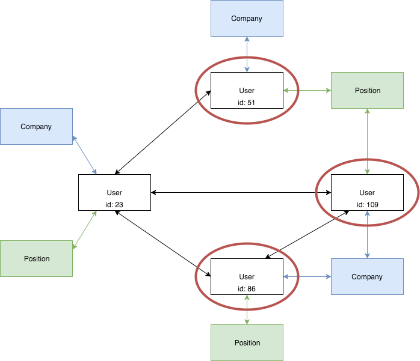
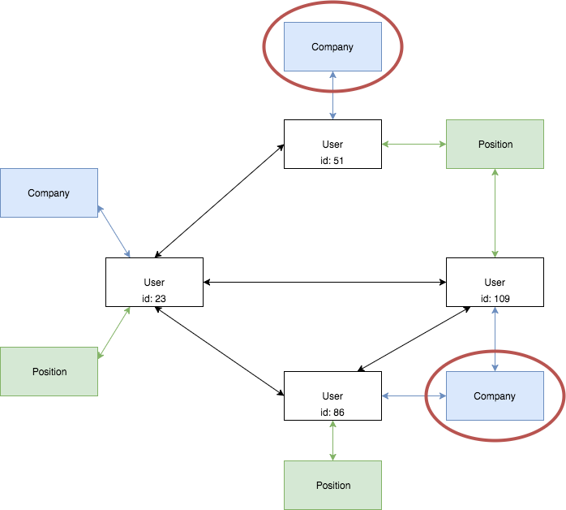

GraphQL
¿Cómo trabajamos actualmente?
REST - Un request para cada petición
REST - Un request para cada petición
Problemáticas que resuelve GraphQL
- Dificultad en decidir la estructura de la URL cuando se tienen relaciones muy anidadas.
- Podemos ejecutar fácilmente multiples solicitudes http para obtener la data que necesitamos.
- Sobrecarga de datos.
¿Qué es GraphQL?
GraphQL es un lenguaje de consulta para tu API, y un runtime del lado del servidor para ejecutar consultas mediante el uso de un sistema de tipado (schema) que defina para tus datos.



Conceptos Básicos
El schema es el que hace funcionar todo en GraphQL
Un schema es un grafo de tipos
Tipos Escalares
- Int
- Float
- String
- Boolean
- ID
- Tipo customizado
Objetos Tipo
tienen campos
los campos pueden tener argumentos
usando los argumentos
Root types
Query: Un tipo que define todas las consultas posibles.
Root types
Mutation: Un tipo cuyos campos definen todas las mutaciones posibles.
Variables
Fragmentos
Y mucho más que ver...
- Aliases
- Operation Name
- Directives
- Interfaces
- Enum types
- Union Types
- Input Types
- ...